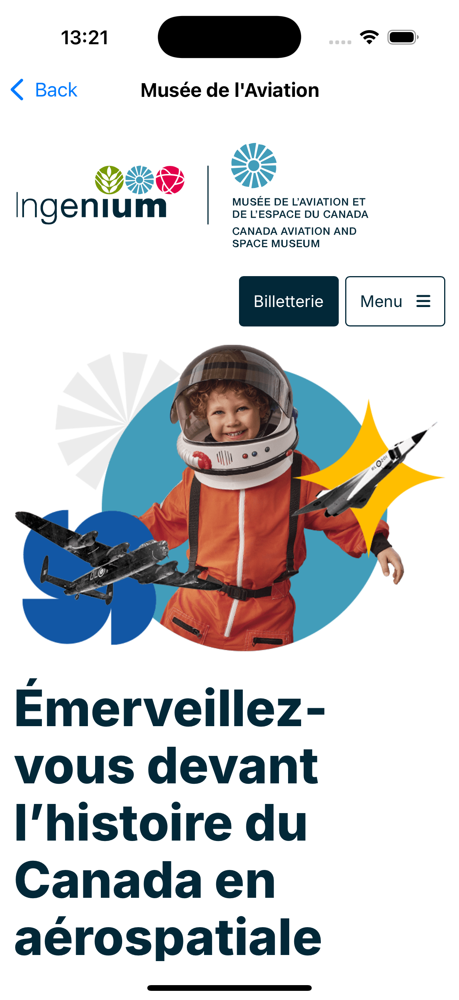

Les Musées nationaux d'Ottawa
Vous devez développer une application qui affiche la liste des musées nationaux d’Ottawa. L’application doit permettre à l’utilisateur de sélectionner un musée et d’afficher des informations supplémentaires à son sujet. De plus, il sera possible de consulter le site web du musée sélectionné. Ce laboratoire présente un certain défi, car il aborde un concept qui n’a pas été vu en classe, à savoir les WebView.
Des ressources sont disponibles pour téléchargement au bas de cet énoncé. Vous y trouverez :
- Un fichier contenant les informations sur les musées
- Des images pour l’interface utilisateur
ContentView
Le fichier ContentView.swift affiche une map avec la position de utilisateur aisin que les musees de la ville d'Ottawa. Il est possible de selectionner un musee et d'afficher ses informations.
Musée sélectionné
Lorqu'un musee est selectionner sur la map, l'itinéraire est affiché sur la carte. Il est aussi possible de consulter les informations du musée et de visiter son site web via les deux icons qui s'affichirons au bas de la scene.

WebView
Lorques l'icon web
 est selectionner, l'utilisateur sera apporte sur une nouvelle scene ou la page web du musee apparaitra.
est selectionner, l'utilisateur sera apporte sur une nouvelle scene ou la page web du musee apparaitra.
Faite une recherche sur l'utilisation de WebView. vous devez importer WebKit dans votre projet.
Informations supplémentaires
Lorsque l'icon info  est selectionner il sera possible de consulter les informations du musée. Vous devez créer une nouvelle vue pour afficher ces informations. De plus, il aura une description textuelle du trajet a suivre afin de ce rendre au musee depuis la position de l'utilisateur.
est selectionner il sera possible de consulter les informations du musée. Vous devez créer une nouvelle vue pour afficher ces informations. De plus, il aura une description textuelle du trajet a suivre afin de ce rendre au musee depuis la position de l'utilisateur.


Télécharger les ressources du projet